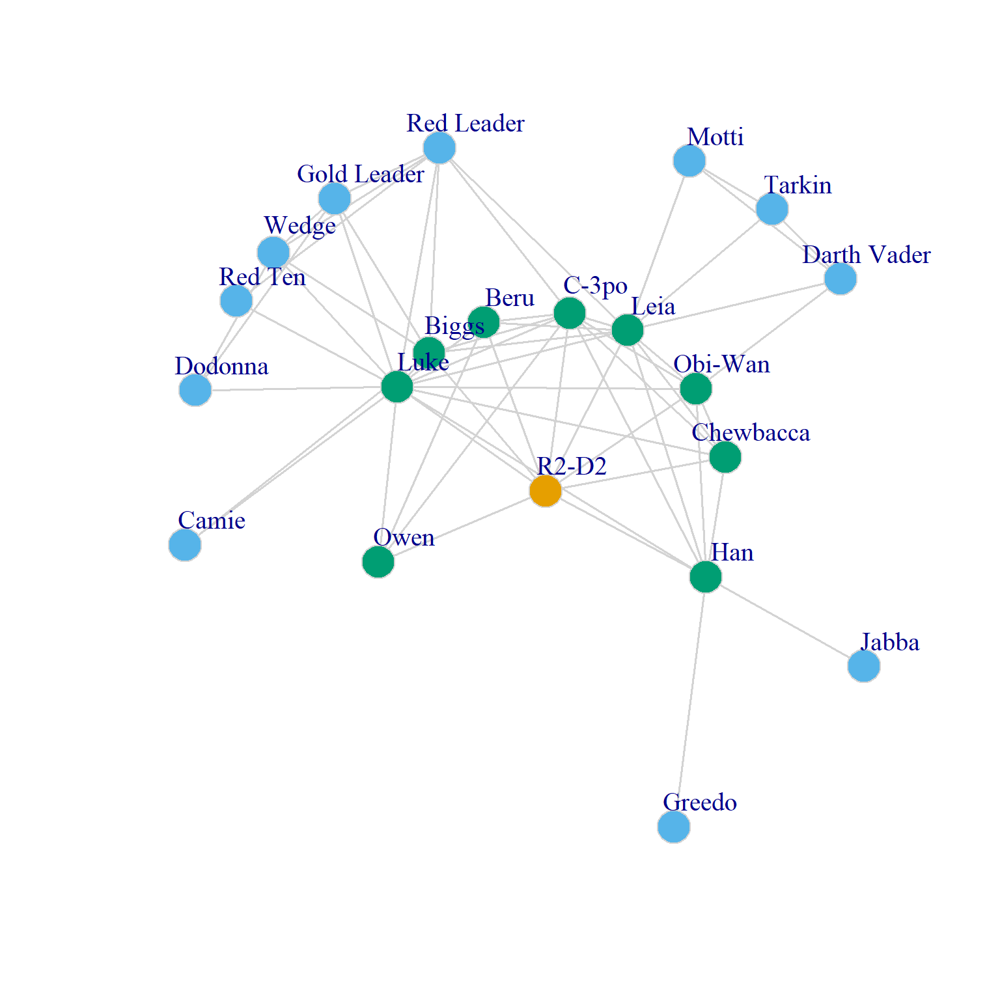
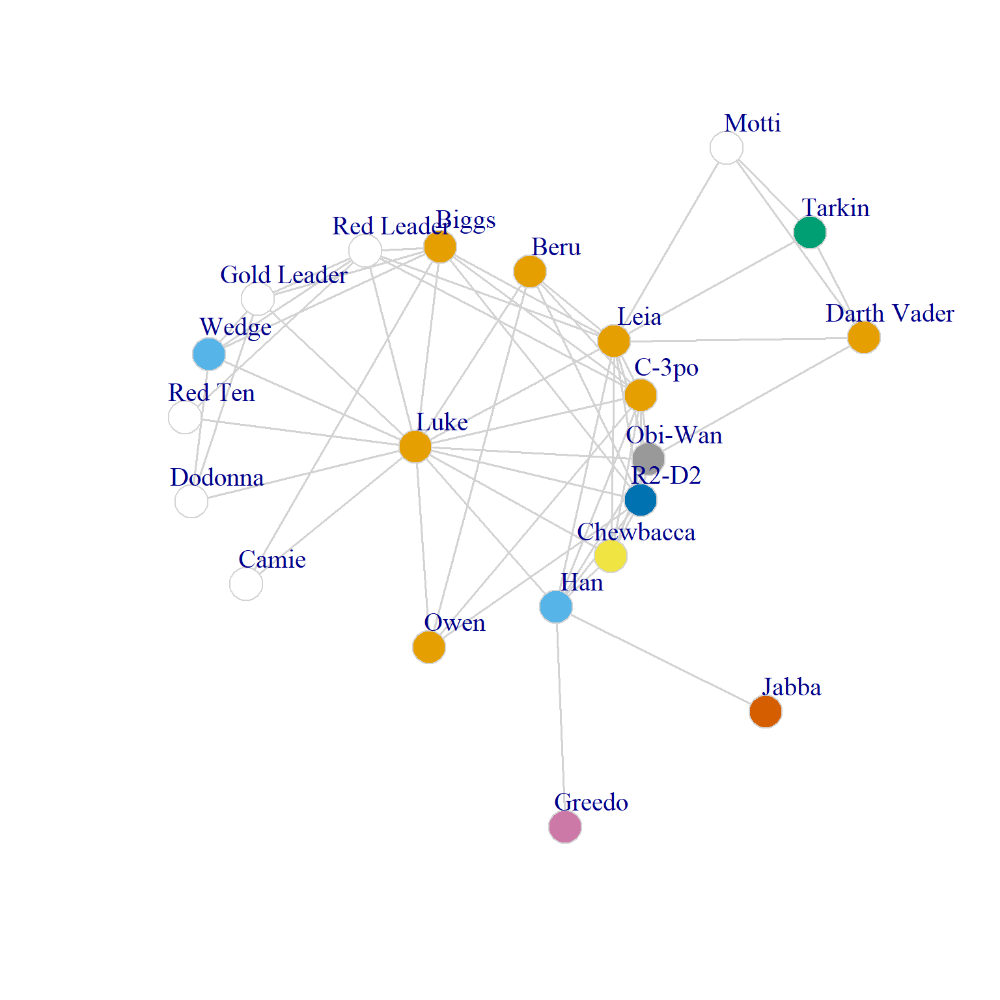
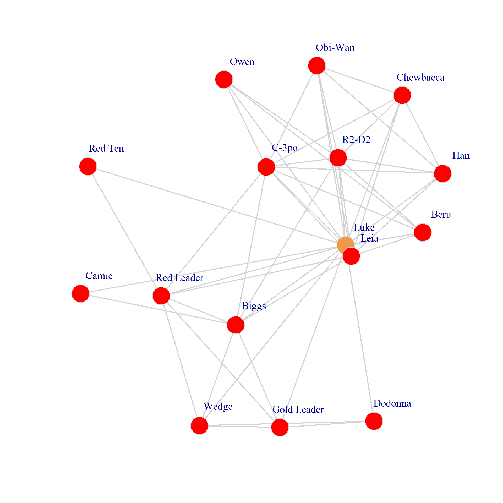

Extending Ego Networks
As we saw in the lecture notes on ego network analysis, the usual metrics for ego networks restrict themselves to the basic ego graph which is a graph composed of ego, their one step (direct) connections and the connections between those alters.
There are ways of extending the analysis of ego networks to graphs beyond the basic ego graph that remain centered on a key node (or two key nodes) of interest. One approach is to relax the restriction that the ego graph should be kept to only the one step contacts of ego. The other is two relax the restriction that we are analyzing just one ego network at a time.
Two Step Ego Graphs
In the first extension we consider the two-step ego graph. This is a graph composed of ego (the focal node), their direct contacts, and the neighbors of their direct contacts. Let’s see what that would look like.
First we load up the New Hope Star Wars social network included in the networkdata package (Gabasova 2016):
Let’s try to see what R2-D2’s and Luke’s two-step ego graph looks like.
First, let’s create a function that takes a given node as input and returns a subgraph of the larger graph containing the focal node, that node’s neighbors, and those neighbors’ neighbors:
Now we can use lapply to apply that function to every node in the New Hope graph:
And here are the three entries of the resulting list:
$`R2-D2`
IGRAPH 0fe7a4c UNW- 21 60 -- Episode IV – A New Hope
+ attr: name (g/c), name (v/c), height (v/n), mass (v/n), hair_color
| (v/c), skin_color (v/c), eye_color (v/c), birth_year (v/n), sex
| (v/c), homeworld (v/c), species (v/c), weight (e/n)
+ edges from 0fe7a4c (vertex names):
[1] R2-D2 --Chewbacca R2-D2 --C-3po R2-D2 --Beru
[4] R2-D2 --Luke R2-D2 --Owen R2-D2 --Obi-Wan
[7] R2-D2 --Leia R2-D2 --Biggs R2-D2 --Han
[10] Chewbacca --Obi-Wan Chewbacca --C-3po Chewbacca --Luke
[13] Chewbacca --Han Chewbacca --Leia Luke --Camie
[16] Camie --Biggs Luke --Biggs Darth Vader--Leia
+ ... omitted several edges
$Chewbacca
IGRAPH 0fe83fa UNW- 21 60 -- Episode IV – A New Hope
+ attr: name (g/c), name (v/c), height (v/n), mass (v/n), hair_color
| (v/c), skin_color (v/c), eye_color (v/c), birth_year (v/n), sex
| (v/c), homeworld (v/c), species (v/c), weight (e/n)
+ edges from 0fe83fa (vertex names):
[1] R2-D2 --Chewbacca R2-D2 --C-3po R2-D2 --Beru
[4] R2-D2 --Luke R2-D2 --Owen R2-D2 --Obi-Wan
[7] R2-D2 --Leia R2-D2 --Biggs R2-D2 --Han
[10] Chewbacca --Obi-Wan Chewbacca --C-3po Chewbacca --Luke
[13] Chewbacca --Han Chewbacca --Leia Luke --Camie
[16] Camie --Biggs Luke --Biggs Darth Vader--Leia
+ ... omitted several edges
$`C-3po`
IGRAPH 0fe948a UNW- 21 60 -- Episode IV – A New Hope
+ attr: name (g/c), name (v/c), height (v/n), mass (v/n), hair_color
| (v/c), skin_color (v/c), eye_color (v/c), birth_year (v/n), sex
| (v/c), homeworld (v/c), species (v/c), weight (e/n)
+ edges from 0fe948a (vertex names):
[1] R2-D2 --Chewbacca R2-D2 --C-3po R2-D2 --Beru
[4] R2-D2 --Luke R2-D2 --Owen R2-D2 --Obi-Wan
[7] R2-D2 --Leia R2-D2 --Biggs R2-D2 --Han
[10] Chewbacca --Obi-Wan Chewbacca --C-3po Chewbacca --Luke
[13] Chewbacca --Han Chewbacca --Leia Luke --Camie
[16] Camie --Biggs Luke --Biggs Darth Vader--Leia
+ ... omitted several edgesFigure 1 shows a point and line plot of R2-D2’s two-step ego network:

Once we have the two-step ego graph we can compute some metrics that are unique for this type of network. One of them is the node linchpin score. A type of centrality measure that combines the logic of brokerage and homophily (or its opposite heterophily). The basic idea is that a node is a “linchpin” (e.g., plays a central role in the network) if they are the only one of its “kind” (as given by some vertex) attribute among its neighbors.
Let us see how this works. ?@fig-stwostep2 shows Luke’s extended ego network but this time with each node colored by home world.

Clearly if any of Luke’s neighbors share the same attribute they should not contribute to the linchpin score. Secondly, if any of their neighbors has access to another node of the same attribute as ego (e.g., if there’s a two-step neighbor that is the same as ego on that attribute) then they should also not count for the score.
So the first thing we need to do is create a vector counting how many of ego’s neighbor are the same as ego on the given attribute:
Now we create another vector that counts the number of C-3PO’s neighbors that have at least one neighbor of the same home world as C-3PO:
And the node linchpin score is just:
Coupled Ego Networks
The second extension that we can use is to expand the idea of the ego network to the case of two-egos that share a certain number of neighbors. These are coupled ego networks (e.g., in the real world, two spouses or friends will typically have coupled ego networks).
To see how this works let’s bring back our get-ego function from before to extract ego graphs:
We can then visualize the coupled ego networks of R2-D2 and Luke as folows:

In Figure 3, the set formed by the union of Luke and Luke’s alters splits into three disjoint subsets (Mattie et al. 2018): Alters that are shared by Luke and Luke (in red), alters connected to Luke but not to Luke (in purple) and alters connected to Luke but not to Luke (in blue).
Typically, we are interested in figuring out how the local structural configuration of each of this set of alters affect the focal tie between the two egos that we are interested (pictured in Figure 3 as a thicker red edge). The basic idea is that the more cohesive (clustered) is the subset of the coupled ego-network composed of shared partners, then the more durable the tie should be. Alternatively, the more cohesive the subset of the ego network composed of non-shared partners, the weaker and less durable the focal tie between the egos is.
Thus, the coupled clustering coefficient can be calculated as:
\[ C_{ij} = (n_{ij} \times cc_{ij}) - \left[(n_i+n_j) \times (cc_i + cc_j)\right] \]
This says that the clustering coefficient of a coupled ego network is equivalent to the clustering coefficient in the subgraph composed of shared alters (\(cc_{ij}\)) minus the sum of the clustering coefficients for non-shared alters for each ego.
coupled.cc <- function(v1, v2, graph) {
n1 <- names(neighbors(graph, v1))
n2 <- names(neighbors(graph, v2))
if (are_adjacent(graph, v1, v2) == TRUE) {
n1 <- n1[-which(n1 == v2)]
n2 <- n2[-which(n2 == v1)]
}
ni <- intersect(n1, n2)
u1 <- setdiff(n1, ni)
u2 <- setdiff(n2, ni)
ccij <- edge_density(subgraph(graph, ni))
cci <- edge_density(subgraph(graph, u1))
ccj <- edge_density(subgraph(graph, u2))
return(list(ccij=ccij, cci = cci, ccj = ccj))
}
coupled.cc("Luke", "Han", g)$ccij
[1] 1
$cci
[1] 0.3055556
$ccj
[1] 0